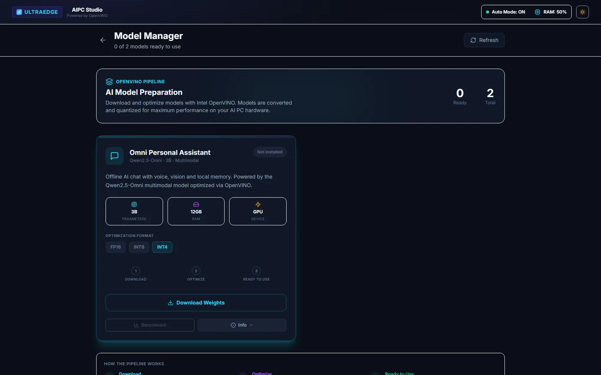
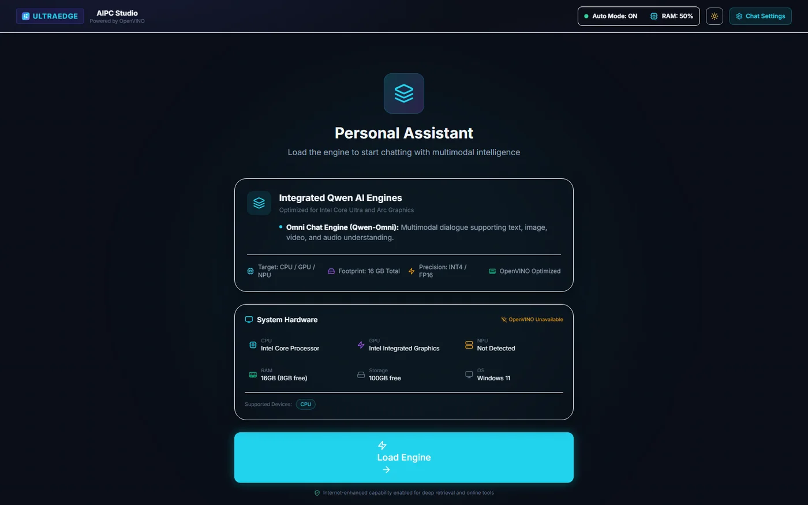
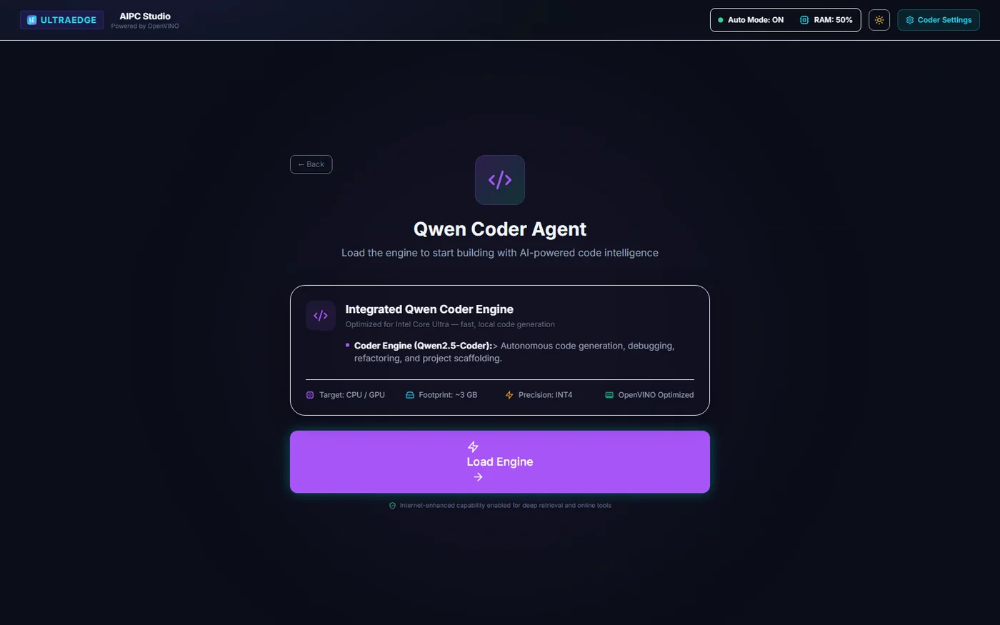
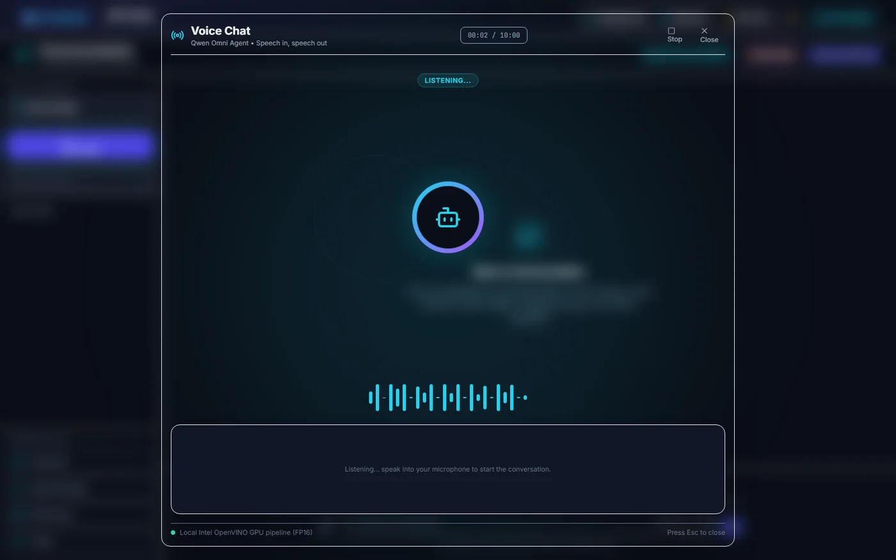
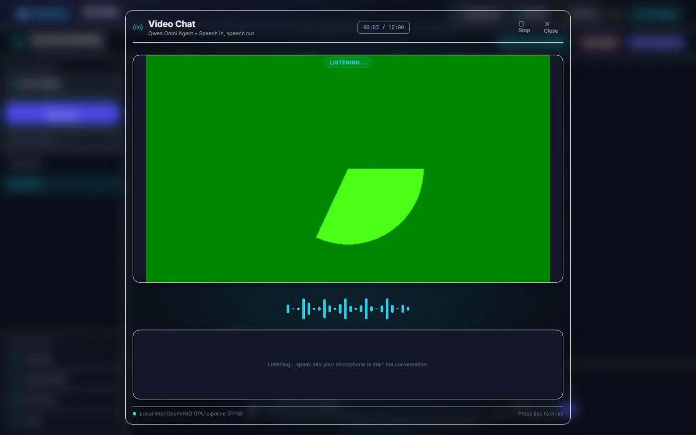
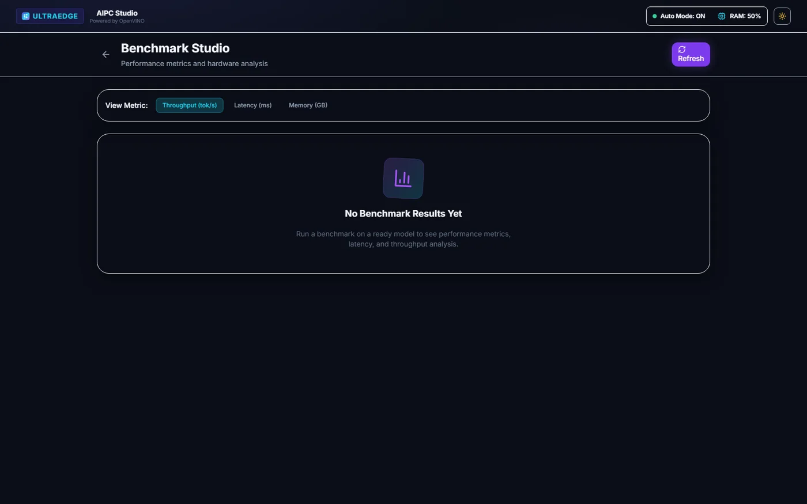
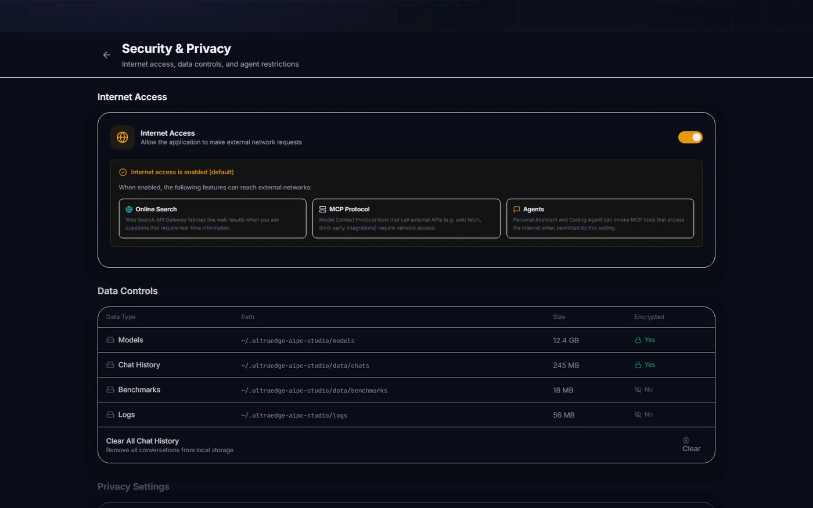

Why an AI PC studio
Most AI demos look great when everything is installed, the model is warm and the network is fast. Real engineering work raises harder questions. Can this run locally? Which device is doing the work: CPU, GPU or NPU? How much memory does the model need? What happens without a network connection? And why did it work yesterday but not today?
UltraEdge AIPC Studio is my answer: a local-first development console for running and evaluating AI workloads on Intel AI PCs. It brings model management, OpenVINO inference, personal and coding assistants, speech and video interfaces, runtime diagnostics and benchmarks into one application, so an AI PC can be used as a small local AI lab rather than just a machine that runs a chatbot.

Built for one class of hardware
The studio targets Intel Core Ultra processors on Windows and Linux. It checks the processor before installing anything and refuses to start on unsupported CPUs. That is a deliberate choice: the point is to exercise the CPU, integrated GPU and NPU together, and results from other hardware would be misleading.
| Component | Requirement |
|---|---|
| Processor | Intel Core Ultra (startup is refused otherwise) |
| Operating system | Windows or Linux |
| Python / Node.js | Python 3.10+ and Node.js 20.19+ |
| Acceleration | Intel graphics and NPU drivers for the host |
| Memory and storage | Depends on the model; multimodal models need a lot |
Architecture
The application has three layers:
| Layer | Location | Responsibility |
|---|---|---|
| Web client | frontend/src | React interface and client-side state |
| API service | backend/app/api | FastAPI request validation and endpoints |
| Runtime services | backend/app/runtime | OpenVINO model loading, inference, speech and tool dispatch |
Chat history and settings are stored in SQLite, hardware checks have their own module, and
model download, verification and conversion sit in a dedicated models package. The backend
binds to 127.0.0.1 by default.
Managing models on the device
The Model Manager shows which models are available, the precision options, the hardware each one needs, download progress and optimisation stages. Models are downloaded, verified, converted for OpenVINO, cached and loaded locally, and each can be benchmarked from the same screen.


Personal and coding assistants
Before loading a model, each assistant shows exactly what it is about to do: the selected engine, the target devices, the precision, the expected memory use and the detected hardware. Text, image, audio and video interaction use supported Qwen models.




The coding workspace adds file browsing, editing and code generation. An optional local executor can run the generated code, but it is disabled by default and is not an operating-system sandbox, so it should only be enabled on a trusted development machine.
Talking to the model: audio and video
Audio Chat keeps the listening state, elapsed time, controls, waveform and transcript in one view. Video Chat adds a camera preview. Speech is generated with Token2Wav, with a profile for low latency and another for quality.




Measuring instead of guessing
Benchmark Studio reports throughput, first-token latency, memory use and model load time once measurements exist. It is the part I care about most for engineering decisions: whether a model belongs on the NPU, the GPU or the CPU should be answered with numbers from the actual machine.


What "local-first" really means
Chat history, settings, audit records, generated speech and the OpenVINO cache all stay on the machine. Local-first does not mean permanently offline, though, and the project is explicit about when the network is used:
- installing Python or npm dependencies;
- downloading a model from Hugging Face;
- running a web-search, exchange-rate or URL-fetching tool you asked for;
- configuring a non-local service endpoint.
The project also does not claim that its SQLite files or model caches are encrypted, so the host account and disk need their own protection. The Security and Privacy page gathers network access, local data, agent restrictions and privacy settings in one place.


Getting started
git clone https://github.com/Nitin-Mane/ultraedge-aipc-studio.git
cd ultraedge-aipc-studio
python -m venv .venv && . .venv/bin/activate # Windows: .venv\Scripts\Activate.ps1
python -m pip install -r backend/requirements.txt
cd frontend && npm install && cd ..
python start.py # API :8000, UI :3000
python start.py --check-only reports whether the machine is suitable without
starting anything.
Project status
The studio is in alpha (v0.1.1) and under active development, so interfaces, model definitions and storage formats may change. It is released under the Apache License 2.0. Backend checks use Ruff and pytest; the frontend uses ESLint, TypeScript, Vitest and a Vite build. I maintain it as an Intel Software Innovator; that title does not mean Intel owns or endorses the project.
Industrial AI does not need more magic. It needs local tests, visible hardware context, practical model management, benchmark evidence and honest notes about what failed. That is the workstation I wanted, so I built it.